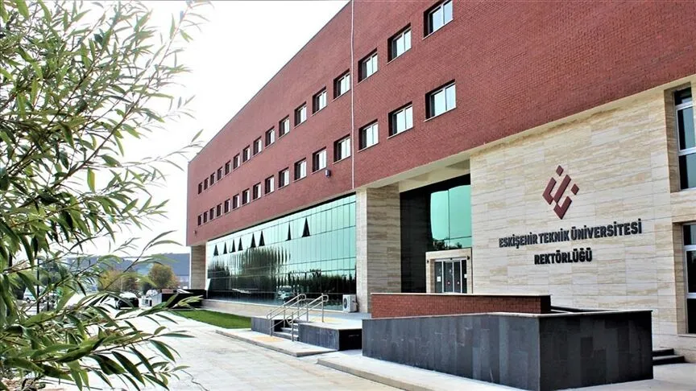
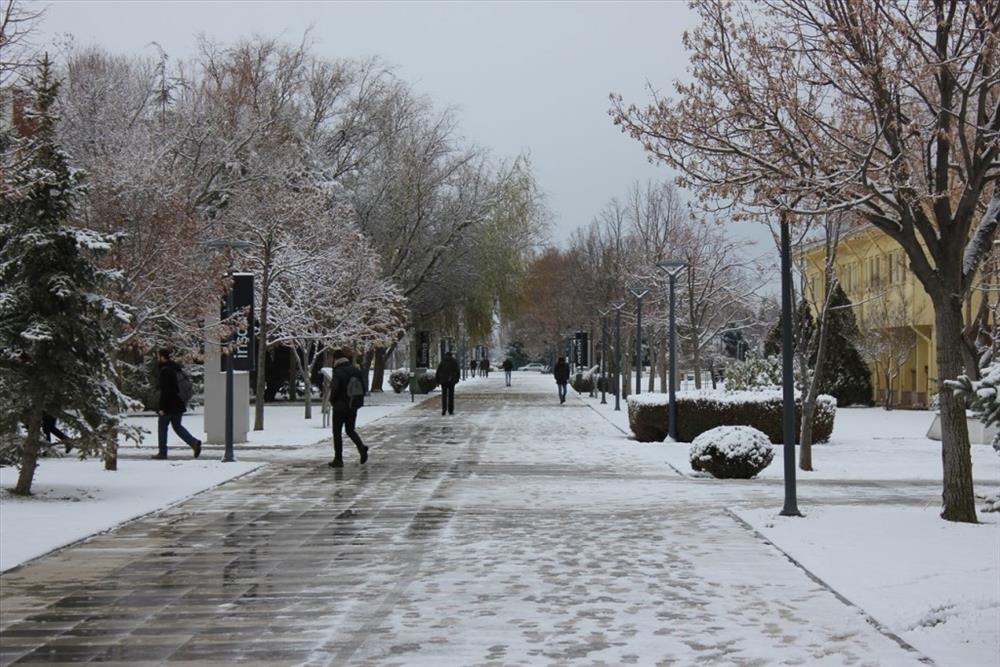

About the University


About Us
Eskişehir Technical University (ESTÜ) was established on May 18, 2018, as an independent university separated from Anadolu University. It is a state university that focuses on technology,aviation, spaceengineering, science, and applied sciences, offering world-class education and research opportunities in the heart of Turkey. The university is the only state-funded university in Türkiye that provides pilot training. Thanks to its Hasan Polatkan Airport, it is one of the largest universities in Türkiye. In 2007, it obtained an operating license, making it the first university in the world to own a licensed university airport.
ESTÜ is committed to producing innovative research and fostering a culture of scientific inquiry. The university hosts numerous research centers and laboratories equipped with state-of-the-art technology. Its academic staff consists of over 700 experienced faculty members who contribute to both national and international research projects.
The university maintains strong collaborations with industry partners and international institutions, providing students with internship opportunities, joint research programs, and competitive scholarships through Erasmus+ and other mobility programs.
The ESTÜ campus is spread across a large green area in Eskişehir, offering the necessary technical infrastructure, sports facilities, cultural centers, and student clubs for a complete university experience.
Numbers at a Glance
Administrative Units
- Legal Counsel
- Informaion Technology Department
- Administrative and Financial Affairs Department
- Library and Documentation Department
- Student Affairs Department
- Personnel Affairs Department
- Health, Culture and SportsDepartment
- Strategy Development Department
- Construction and Technical Affairs Department
- Revolving Fund Management Directorate
- Occupational Health and Safety Unit